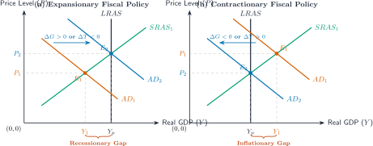
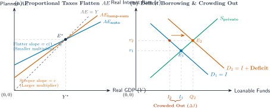

10 Chapter 10: Fiscal Policy, Automatic Stabilizers, and Sovereign Debt
This chapter provides a rigorous, pedagogical treatment of Chapter 10: Fiscal Policy, Automatic Stabilizers, and Sovereign Debt, aligned with Course Learning Objectives MA-4 and C2002-3 and benchmarked to Krugman and Wells’ Macroeconomics. Students examine how federal government purchases, transfer payments, and taxation shift aggregate demand, how automatic stabilizers dampen business cycle volatility without legislative delay, how spending and tax multipliers operate in algebra-first expenditure models, and how annual budget deficits accumulate into sovereign debt.
10.1 Learning Outcomes, Key Terms, and Opening Hook
Course Learning Outcomes
Upon completing this chapter, students should be able to:
- Distinguish Fiscal Instruments: Differentiate between discretionary fiscal policy (deliberate legislative changes in government purchases, transfers, and tax rates) and automatic stabilizers (built-in fiscal rules that adjust countercyclically without new legislation).
- Analyze AD–AS Stabilization: Use the Aggregate Demand–Aggregate Supply (AD–AS) model to evaluate how expansionary and contractionary fiscal policies close recessionary and inflationary output gaps, and identify implementation lags and crowding-out constraints.
- Compute Fiscal Multipliers: Derive and apply the government purchases multiplier (\(k_G\)), transfer multiplier (\(k_{TR}\)), lump-sum tax multiplier (\(k_T\)), balanced-budget multiplier (\(k_{BB}\)), and proportional-tax multiplier (\(k_G^{\text{auto}}\)) using high-school algebra.
- Evaluate Deficits and Sovereign Debt: Distinguish an annual budget deficit (a flow variable) from public debt (a stock variable), separate cyclical from structural deficits, and evaluate debt sustainability using the Debt-to-GDP ratio (\(B/Y\)).
Key Terms
[leftmargin=1.5em] * Fiscal Policy: Deliberate changes in federal government purchases, transfer payments, and taxation designed to influence aggregate demand, employment, and price stability. * Expansionary Fiscal Policy: Increases in government purchases (\(G\)), increases in transfer payments (\(TR\)), or cuts in taxes (\(T\)) intended to shift aggregate demand rightward and close a recessionary gap. * Contractionary Fiscal Policy: Decreases in government purchases (\(G\)), reductions in transfers (\(TR\)), or increases in taxes (\(T\)) intended to shift aggregate demand leftward and close an inflationary gap. * Automatic Stabilizers: Built-in features of the tax and transfer system—such as progressive income taxes and unemployment insurance—that automatically stimulate aggregate demand during recessions and restrain it during booms. * Government Purchases Multiplier (\(k_G\)): The ratio of the total change in equilibrium real GDP to an initial autonomous change in government purchases (\(\Delta Y / \Delta G\)). * Tax Multiplier (\(k_T\)): The ratio of the total change in equilibrium real GDP to an initial autonomous change in lump-sum taxes (\(\Delta Y / \Delta T\)). * Crowding Out: The reduction in private investment (\(I\)) and interest-sensitive consumption (\(C\)) that occurs when deficit-financed government borrowing raises real interest rates (\(r\)) in the loanable funds market. * Budget Deficit (Flow) vs. Public Debt (Stock): A budget deficit is the excess of government outlays over tax revenues during a single fiscal year; public debt is the cumulative stock of outstanding government liabilities owed to bondholders at a point in time.
When a severe macroeconomic shock hits, Congress and the President face an immediate design question: How quickly can federal dollars reach households and firms, and which fiscal instrument delivers the largest bang per buck?
During the Great Recession, Congress enacted the American Recovery and Reinvestment Act (ARRA) of February 2009, a \(\$787\text{ billion}\) package combining federal infrastructure and state fiscal relief grants, payroll tax credits, and extended unemployment benefits. Because highway, bridge, and clean-energy projects required engineering bids and environmental reviews, much of the direct government purchase component (\(G\)) rolled out over 2010 and 2011. Eleven years later, when the COVID-19 shock triggered an abrupt lockdown in March 2020, lawmakers passed the CARES Act, prioritizing immediate direct household stimulus checks, expanded unemployment insurance supplements (\(TR\)), and forgivable small-business payroll loans that reached bank accounts within weeks.
Comparing these two landmark interventions highlights the central trade-offs of fiscal policy: direct government purchases carry a larger theoretical multiplier than tax cuts or transfers, yet transfers and automatic stabilizers disburse far faster when timing is critical.
10.2 Fiscal Policy in the AD–AS Model
Conceptual Introduction
Fiscal policy refers to the federal government’s use of taxation (\(T\)), transfer payments (\(TR\)), and direct purchases of goods and services (\(G\)) to stabilize the macroeconomy around potential output (\(Y_p\)). While state and local governments also tax and spend, most operate under balanced-budget rules that force them to cut spending or raise taxes when revenues fall during a downturn. Only the federal government possesses the borrowing capacity to run deliberate countercyclical deficits during recessions and surpluses during inflationary booms.
The core mechanism operates through the expenditure identity \(AD = C + I + G + NX\). Direct government purchases (\(G\))—such as federal highway construction, defense equipment, or public health research—enter aggregate demand one-for-one at any given price level. By contrast, changes in personal taxes (\(T\)) and government transfers (\(TR\), such as Social Security, Medicaid, and unemployment insurance) operate indirectly by altering household disposable income (\(Y_D = Y - T + TR\)), which in turn changes consumption spending (\(C\)).
In the short run, when nominal wages and input prices are sticky, shifting the Aggregate Demand curve alters both real GDP (\(Y\)) and the aggregate price level (\(P\)). If an economy is trapped below potential GDP in a recessionary gap, expansionary fiscal policy lifts planned spending, encouraging firms to expand production and rehire laid-off workers. Conversely, if an overheating economy sits above potential GDP in an inflationary gap, contractionary fiscal policy cools excess demand and relieves upward pressure on prices.
Visual Representation

0 or \Delta T < 0) shifts AD_1 rightward to AD_2, eliminating the recessionary gap (Y_p - Y_1) and raising equilibrium from E_1 to E_2. In Panel (b), contractionary fiscal policy (\Delta G < 0 or \Delta T > 0) shifts AD_1 leftward to AD_2, closing the inflationary gap (Y_1 - Y_p) and moderating the price level from P_1 to P_2.">Figure 1 illustrates how fiscal policy targets short-run output gaps. Notice that when \(SRAS_1\) slopes upward, an expansionary fiscal boost does not translate entirely into real output gains: part of the rightward demand shift is absorbed by a higher price level (\(P_1 \rightarrow P_2\)). The closer the economy operates to full capacity (\(Y_p\)), the steeper the effective supply curve becomes, meaning additional fiscal stimulus generates progressively more inflation and less real GDP growth.
Mathematical Foundation
To measure the horizontal shift of the Aggregate Demand curve before price-level feedback occurs, economists decompose planned aggregate expenditure (\(AE\)) into autonomous components and induced consumption:
\[ AE = C_0 + c(Y - T + TR) + I_p + G + NX_0 \]
where \(C_0\) is autonomous consumption, \(c \in (0,1)\) is the Marginal Propensity to Consume (\(MPC\)), \(T\) is lump-sum taxes, \(TR\) is government transfer payments, \(I_p\) is planned investment, \(G\) is government purchases, and \(NX_0\) is autonomous net exports.
At a fixed price level, goods-market equilibrium requires \(Y = AE\). Solving for equilibrium real GDP (\(Y^*\)) yields: \[\begin{align} Y^* &= C_0 + cY^* - cT + cTR + I_p + G + NX_0 \nonumber \\ Y^*(1 - c) &= C_0 - cT + cTR + I_p + G + NX_0 \nonumber \\ Y^* &= \frac{1}{1 - c}\left(C_0 + I_p + G + NX_0 - cT + cTR\right) \end{align}\]
The fiscal multiplier formulas measure the horizontal shift of the \(AD\) curve (\(\Delta AD_{\text{horizontal}}\)) at a constant price level. Because the \(SRAS\) curve slopes upward in the short run, a rising price level reduces real wealth and raises interest rates, partially offsetting the initial demand shift. Consequently, when \(SRAS\) is upward sloping, the actual short-run change in equilibrium output (\(\Delta Y_{\text{SR}}\)) is strictly smaller than the full Keynesian multiplier shift (\(\Delta Y_{\text{SR}} < k_G \cdot \Delta G\)).
Real-World Application
Closing an Inflationary Gap vs. Avoiding Over-Stimulation: Following the 2020–2021 pandemic recovery, U.S. real GDP rebounded rapidly above pre-pandemic trend projections while supply chains remained constrained. By mid-2021, the U.S. economy exhibited classic symptoms of an inflationary gap: job openings exceeded unemployed workers, and core inflation accelerated sharply. In such an environment, further expansionary fiscal policy pushes \(AD\) further up the steep portion of \(SRAS\), amplifying price pressures rather than real production. Conversely, during the 1968 Revenue and Expenditure Control Act, Congress enacted a temporary \(10\%\) income tax surcharge specifically to shift \(AD\) leftward and cool Vietnam-era demand-pull inflation.
10.3 Fiscal Multipliers: Purchases, Transfers, and Taxes
Conceptual Introduction
When the federal government spends \(\$1\text{ billion}\) on a new transit corridor, total national income typically rises by more than \(\$1\text{ billion}\). This amplification is the multiplier effect: the initial spending becomes income for construction workers, engineers, and steel suppliers, who then spend a fraction \(c\) (\(MPC\)) of their new income on groceries, rent, and services, generating a cascade of secondary spending rounds.
Crucially, however, different fiscal tools trigger different initial spending rounds. When the government purchases goods and services directly (\(\Delta G\)), \(100\%\) of the outlay enters aggregate expenditure in Round 1. By contrast, when the government cuts lump-sum taxes (\(\Delta T < 0\)) or increases transfer payments (\(\Delta TR > 0\)), households first receive the funds as disposable income and save a fraction \((1 - c)\) (\(MPS\)) immediately. Only the consumed fraction \(c\) enters Round 1 of aggregate spending.
As a result, the government purchases multiplier (\(k_G\)) is strictly larger in absolute magnitude than both the tax multiplier (\(k_T\)) and the transfer multiplier (\(k_{TR}\)). Moreover, if the government increases purchases and taxes by the exact same dollar amount (\(\Delta G = \Delta T\)), the two effects do not cancel out; instead, they produce a net expansionary stimulus equal to the initial outlay.
Visual Representation
Table~\(\ref{tab:multiplier-rounds}\) traces the round-by-round spending cascade for a \(\$100\text{ billion}\) fiscal intervention when \(MPC = 0.80\) (\(MPS = 0.20\)), contrasting direct government purchases (\(\Delta G = +\$100\text{B}\)) against a lump-sum tax cut (\(\Delta T = -\$100\text{B}\)).
Mathematical Foundation
Taking changes (\(\Delta\)) in our equilibrium output equation \(Y^* = \frac{1}{1-c}(C_0 + I_p + G + NX_0 - cT + cTR)\) while holding \(C_0\), \(I_p\), and \(NX_0\) constant gives the four core fiscal multipliers: \[\begin{align} k_G &= \frac{\Delta Y}{\Delta G} = \frac{1}{1 - c} \label{eq:kg} \\[4pt] k_{TR} &= \frac{\Delta Y}{\Delta TR} = \frac{c}{1 - c} \label{eq:ktr} \\[4pt] k_T &= \frac{\Delta Y}{\Delta T} = -\frac{c}{1 - c} \label{eq:kt} \\[4pt] k_{BB} &= k_G + k_T = \frac{1}{1 - c} + \left(-\frac{c}{1 - c}\right) = \frac{1 - c}{1 - c} = 1 \label{eq:kbb} \end{align}\] Notice that for any \(0 < c < 1\), \(|k_G| > |k_T|\) because \(1 > c\), and the Balanced-Budget Multiplier (\(k_{BB}\)) equals exactly \(1\) regardless of the value of \(c\).
Suppose an economy has a Marginal Propensity to Consume of \(c = 0.75\). Potential real GDP is \(Y_p = \$20{,}000\text{ billion}\), and current equilibrium output is \(Y_0 = \$19{,}400\text{ billion}\) (assuming a fixed price level in the short run).
Step 1: Compute the output gap.
\[ \text{Recessionary Gap} = Y_p - Y_0 = \$20{,}000\text{B} - \$19{,}400\text{B} = \$600\text{ billion} \]
To restore full employment, policymakers must shift aggregate demand rightward by \(\Delta Y = +\$600\text{ billion}\).
Step 2: Calculate the required change in government purchases (\(\Delta G\)). First compute the government purchases multiplier:
\[ k_G = \frac{1}{1 - c} = \frac{1}{1 - 0.75} = \frac{1}{0.25} = 4 \]
Now solve \(\Delta Y = k_G \cdot \Delta G\) for \(\Delta G\):
\[ \$600\text{B} = 4 \cdot \Delta G \implies \Delta G = \frac{\$600\text{B}}{4} = +\$150\text{ billion} \]
Step 3: Calculate the required lump-sum tax cut (\(\Delta T\)) if used alone. Compute the lump-sum tax multiplier:
\[ k_T = -\frac{c}{1 - c} = -\frac{0.75}{1 - 0.75} = -\frac{0.75}{0.25} = -3 \]
Solve \(\Delta Y = k_T \cdot \Delta T\) for \(\Delta T\):
\[ \$600\text{B} = -3 \cdot \Delta T \implies \Delta T = \frac{\$600\text{B}}{-3} = -\$200\text{ billion} \]
Because households save \(25\%\) of a tax cut initially, Congress must cut taxes by \(\$200\text{ billion}\)—\(\$50\text{ billion}\) more than the \(\$150\text{ billion}\) in direct government purchases—to achieve the same \(+\$600\text{ billion}\) expansion in aggregate demand.
Step 4: Calculate the balanced-budget expansion (\(\Delta G = \Delta T\)). If Congress is required to keep the budget deficit unchanged (\(\Delta G = \Delta T\)), use \(k_{BB} = 1\):
\[ \Delta Y = k_{BB} \cdot \Delta G \implies \$600\text{B} = 1 \cdot \Delta G \implies \Delta G = \Delta T = +\$600\text{ billion} \]
Real-World Application
Targeting High-MPC Households During Downturns: In practice, the effective multiplier of a tax cut or transfer payment depends heavily on who receives the funds. Empirical studies of the 2001 and 2008 tax rebates and the 2020–2021 Economic Impact Payments show that liquidity-constrained, lower-income households exhibit a high marginal propensity to consume (\(c \approx 0.70\text{–}0.90\)), spending stimulus checks rapidly on food, utilities, and rent. Higher-income households, who hold ample liquid savings, exhibit a much lower short-run \(MPC\) (\(c \approx 0.10\text{–}0.25\)), saving most of a temporary tax rebate or using it to pay down debt. Consequently, phase-out income thresholds and targeted transfers such as SNAP (food assistance) and unemployment insurance generate substantially larger short-run demand multipliers than broad across-the-board tax rate reductions.
10.4 Automatic Stabilizers, Lags, and Crowding Out
Conceptual Introduction
Discretionary fiscal policy suffers from three unavoidable timing bottlenecks known as policy lags:
- Recognition Lag: The time required for statistical agencies (such as the BEA and BLS) to collect and revise GDP and employment data so policymakers realize a recession or inflation surge has begun.
- Legislative Lag: The months required for Congress and the President to negotiate, draft, and pass tax or spending bills.
- Implementation Lag: The time needed for federal agencies to award contracts, distribute grants, and put money into circulation.
Because of these lags, poorly timed discretionary stimulus can arrive after the economy has already begun recovering on its own, inadvertently fueling inflation.
Automatic stabilizers bypass recognition and legislative lags entirely. Progressive personal income taxes, corporate profit taxes, unemployment insurance (UI), and means-tested transfers (such as SNAP and Medicaid) are written into standing law. When GDP contracts, households fall into lower tax brackets and laid-off workers automatically qualify for UI benefits, cushioning disposable income. When the economy booms, rising incomes push households into higher tax brackets and transfer outlays automatically shrink, cooling aggregate demand.
Even when fiscal stimulus arrives on time, its net effect can be dampened by crowding out. When the federal government runs a budget deficit, the U.S. Treasury borrows in the loanable funds market by issuing Treasury securities. Increased demand for loanable funds pushes up the equilibrium real interest rate (\(r\)), which raises the cost of borrowing for businesses and households, reducing private investment (\(I\)) and durable-goods consumption.
Visual Representation

Figure 2 displays both built-in moderation mechanisms. In Panel (a), flattening the \(AE\) line reduces the horizontal output swing caused by any vertical shock to autonomous investment or exports. In Panel (b), crowding out explains why expansionary fiscal policy has its strongest impact during deep recessions (when private investment demand is weak and interest rates are near zero) and its weakest impact when the economy is near full employment and credit markets are tight.
Mathematical Foundation
To model proportional income taxation as an automatic stabilizer, replace lump-sum taxes \(T\) with a tax function \(T = T_0 + tY\), where \(T_0\) is autonomous taxes and \(t \in (0,1)\) is the marginal income tax rate. Disposable income becomes:
\[ Y_D = Y - (T_0 + tY) + TR = (1 - t)Y - T_0 + TR \]
Substituting \(Y_D\) into planned aggregate expenditure \(AE = C_0 + cY_D + I_p + G + NX_0\) and solving \(Y^* = AE\): \[\begin{align} Y^* &= C_0 + c(1 - t)Y^* - cT_0 + cTR + I_p + G + NX_0 \nonumber \\ Y^*\big[1 - c(1 - t)\big] &= C_0 - cT_0 + cTR + I_p + G + NX_0 \nonumber \\ k_G^{\text{auto}} &= \frac{\Delta Y}{\Delta G} = \frac{1}{1 - c(1 - t)} \end{align}\] Because \(0 < t < 1\), \((1 - t) < 1\), which ensures \(1 - c(1 - t) > 1 - c\) and therefore \(k_G^{\text{auto}} < k_G\).
Suppose \(c = 0.80\).
- With lump-sum taxes (\(t = 0\)):
\[ k_G = \frac{1}{1 - 0.80} = \frac{1}{0.20} = 5.0 \]
If private investment falls by \(\Delta I_p = -\$100\text{ billion}\), equilibrium GDP drops by \(5.0 \times (-\$100\text{B}) = -\$500\text{ billion}\). * With a proportional income tax rate (\(t = 0.25\)):
\[ k_G^{\text{auto}} = \frac{1}{1 - 0.80(1 - 0.25)} = \frac{1}{1 - 0.80(0.75)} = \frac{1}{1 - 0.60} = \frac{1}{0.40} = 2.5 \]
The exact same \(-\$100\text{ billion}\) drop in private investment now reduces equilibrium GDP by \(2.5 \times (-\$100\text{B}) = -\$250\text{ billion}\)—cutting recessionary volatility in half automatically.
Real-World Application
Automatic Stabilizers During the 2020–2022 Business Cycle: Even before Congress enacted discretionary stimulus in 2020, existing U.S. automatic stabilizers absorbed a substantial share of household income losses. As payroll employment dropped sharply in Q2 2020, federal income tax withholding fell automatically while regular state unemployment insurance claims surged. Later, during the rapid nominal wage and GDP expansion of 2021–2022, progressive federal income tax brackets automatically collected surging capital gains and income tax receipts while pandemic-era transfer outlays wound down, shrinking the federal deficit by more than half between FY 2021 and FY 2022 without requiring a single contractionary tax-hike bill.
10.5 Budget Deficits, Surpluses, and Sovereign Debt
Conceptual Introduction
Public debates frequently conflate the federal budget deficit with the national debt, yet they measure fundamentally different economic quantities. A budget deficit is a flow variable measured over a single fiscal year (October 1 through September 30 for the U.S. federal government): it equals total government outlays (\(G + TR + \text{net interest}\)) minus total tax revenues (\(T\)). When revenues exceed outlays, the government runs a budget surplus. By contrast, public debt (sovereign debt) is a stock variable representing the cumulative total of past deficits minus past surpluses at a specific date.
Economists further separate the observed budget balance into two components:
- Cyclical Deficit: The temporary portion of a deficit caused automatically by the business cycle when real GDP falls below potential (\(Y < Y_p\)), depressing tax receipts and raising transfer payments.
- Structural (Cyclically Adjusted) Deficit: The underlying deficit that would persist even if the economy were operating at full-employment potential output (\(Y = Y_p\)).
Evaluating fiscal sustainability requires comparing public debt not to a household credit card, but to the economy’s capacity to service interest payments—measured by the Debt-to-GDP ratio (\(B_t / Y_t\)). Just as a household’s mortgage burden depends on its annual income, a nation’s debt burden depends on the size and growth rate of its nominal GDP.
Visual Representation
Table~\(\ref{tab:deficit-decomposition}\) illustrates how the cyclical and structural components of the federal budget behave across phases of the business cycle.
Two primary St. Louis Fed (FRED) series allow students to track U.S. fiscal dynamics rigorously:
- (Federal Surplus or Deficit [-]): Reports the annual unified federal budget balance in millions of dollars by fiscal year (not seasonally adjusted), where negative values indicate deficits. Because is an annual fiscal-year flow, students must never divide it by a single quarter’s GDP without annualizing or matching time periods.
- (Federal Debt: Total Public Debt as Percent of Gross Domestic Product): Reports quarterly gross federal debt divided by annualized nominal GDP (percent, seasonally adjusted, available from 1966 onward). Alongside historical OMB budget records from the immediate postwar period, these data show how the U.S. Debt-to-GDP ratio fell steadily from over \(118\%\) at the end of World War II in 1946 to roughly \(31\%\) in 1981—even though nominal dollar debt rose—because nominal GDP growth outpaced debt accumulation.
Mathematical Foundation
Let \(B_{t-1}\) denote public debt at the end of year \(t-1\), \(r\) the nominal interest rate on government bonds, \(G_t + TR_t\) non-interest (primary) outlays, and \(T_t\) tax revenues. The government’s intertemporal budget constraint is:
\[ \text{Total Deficit}_t = \underbrace{(G_t + TR_t - T_t)}_{\text{Primary Deficit } (D_t)} + \underbrace{r B_{t-1}}_{\text{Interest Outlays}} \]
End-of-year debt evolves according to \(B_t = (1 + r)B_{t-1} + D_t\). Dividing both sides by nominal GDP \(Y_t = (1 + g)Y_{t-1}\) (where \(g\) is the nominal GDP growth rate) yields the law of motion for the Debt-to-GDP ratio \(b_t = B_t / Y_t\):
\[ b_t = \left(\frac{1 + r}{1 + g}\right) b_{t-1} + d_t \implies \Delta b_t \approx (r - g)b_{t-1} + d_t \]
where \(d_t = D_t / Y_t\) is the primary deficit as a share of GDP. When \(g > r\), a country can stabilize its Debt-to-GDP ratio (\(\Delta b_t = 0\)) even while running a modest primary deficit (\(d_t = (g - r)b_{t-1} > 0\)). When \(r > g\), stabilizing the Debt-to-GDP ratio requires running a primary budget surplus (\(d_t < 0\)).
Running a smaller budget deficit (for example, shrinking the annual deficit from \(\$1.8\text{ trillion}\) to \(\$1.4\text{ trillion}\)) does not reduce the national debt. Because the deficit is still positive, the total stock of public debt still increases by \(\$1.4\text{ trillion}\)—it simply grows at a slower pace. Public debt falls in dollar terms only when the government runs a budget surplus.
Suppose a country enters the year with a Debt-to-GDP ratio of \(b_{t-1} = 100\%\) (\(1.00\)), faces an average nominal interest rate on public debt of \(r = 4.5\%\) (\(0.045\)), and experiences nominal GDP growth of \(g = 3.0\%\) (\(0.030\)).
Step 1: Compute the interest-growth differential \((r - g)\).
\[ r - g = 0.045 - 0.030 = +0.015 \quad (1.5\% \text{ of GDP}) \]
Step 2: Find the primary budget balance (\(d_t\)) required to keep \(\Delta b_t = 0\). Using the linear approximation \(\Delta b_t \approx (r - g)b_{t-1} + d_t = 0\):
\[ 0 = (0.015)(1.00) + d_t \implies d_t = -0.015 \quad (-1.5\% \text{ of GDP}) \]
Because \(r > g\), the government must run a primary budget surplus of approximately \(1.5\%\) of GDP (collecting \(1.5\%\) of GDP more in taxes than it spends on non-interest programs) simply to prevent its Debt-to-GDP ratio from rising above \(100\%\).
Real-World Application
Post-WWII De-Leveraging vs. 21st-Century Structural Deficits: Between 1946 and 1974, the U.S. federal government rarely ran large budget surpluses, yet the Debt-to-GDP ratio fell by nearly 85 percentage points because real GDP growth and moderate inflation expanded the denominator (\(Y_t\)) faster than the nominal interest rate (\(r\)) compounded the numerator (\(B_t\)). In contrast, when an aging population drives up mandatory entitlement outlays (Social Security and Medicare) while interest rates exceed the economy’s long-run growth rate (\(r > g\)), structural primary deficits cause the Debt-to-GDP ratio to climb continuously unless tax revenues or spending trajectories are adjusted.
10.6 Bring It Home and Check Your Understanding
Returning to our comparison of the 2009 ARRA and 2020 CARES Act packages, modern macroeconomists view discretionary stimulus and automatic stabilizers as complements rather than substitutes. During a sudden downturn, automatic stabilizers (unemployment insurance and progressive taxes) provide immediate, self-terminating support with zero legislative lag. If a recession proves deep and persistent, targeted discretionary transfers to liquidity-constrained households deliver rapid demand support, while high-multiplier public infrastructure investments (\(\Delta G\)) boost both short-run aggregate demand and long-run potential output (\(LRAS\))—provided policymakers pair short-run stimulus with a credible medium-run fiscal framework that keeps the Debt-to-GDP ratio on a sustainable path.
Review Problems
- Multiplier Comparison: In a closed economy with lump-sum taxes and \(MPC = 0.80\), compare the horizontal shift in aggregate demand resulting from (a) a \(\$50\text{ billion}\) increase in government purchases, (b) a \(\$50\text{ billion}\) cut in lump-sum taxes, and (c) a \(\$50\text{ billion}\) increase in government purchases financed entirely by a \(\$50\text{ billion}\) lump-sum tax increase.
- Automatic Stabilizers: Explain both intuitively and algebraically why raising the marginal income tax rate \(t\) from \(0\) to \(0.20\) reduces the amplitude of business-cycle fluctuations when \(c = 0.75\).
- AD–AS vs. Keynesian Cross: Suppose \(MPC = 0.75\) and government purchases rise by \(\Delta G = +\$100\text{ billion}\). Explain why the short-run increase in equilibrium real GDP (\(\Delta Y_{\text{SR}}\)) is less than \(\$400\text{ billion}\) when the \(SRAS\) curve slopes upward.
- Deficits, Debt, and FRED Data: Suppose the U.S. federal deficit narrows from \(-\$1{,}700\text{ billion}\) in FY 2025 to \(-\$1{,}300\text{ billion}\) in FY 2026. Does total public debt rise or fall in FY 2026? Why must an analyst align fiscal-year dates when comparing to quarterly GDP?
- Debt-to-GDP Dynamics: An economy has a Debt-to-GDP ratio of \(80\%\), a nominal interest rate on debt of \(r = 3.5\%\), and a nominal GDP growth rate of \(g = 5.0\%\). Can this government run a primary budget deficit while still reducing its Debt-to-GDP ratio? Calculate the maximum primary deficit (as a \(\%\) of GDP) consistent with a non-increasing Debt-to-GDP ratio.
Worked Solutions
- Multiplier Comparison: With \(c = 0.80\):
- \(k_G = \frac{1}{1 - 0.80} = 5 \implies \Delta AD = 5 \times \$50\text{B} = +\$250\text{ billion}\).
- \(k_T = -\frac{0.80}{1 - 0.80} = -4 \implies \Delta AD = (-4) \times (-\$50\text{B}) = +\$200\text{ billion}\).
- \(k_{BB} = k_G + k_T = 5 - 4 = 1 \implies \Delta AD = 1 \times \$50\text{B} = +\$50\text{ billion}\).
- Automatic Stabilizers: Intuitively, a proportional income tax siphons off a fraction \(t\) of every dollar earned during an expansion and cushions disposable income losses by fraction \(t\) during a downturn, weakening the induced consumption feedback loop. Algebraically, with \(c = 0.75\), the lump-sum multiplier is \(k_G = \frac{1}{1 - 0.75} = 4.0\), whereas with \(t = 0.20\) the multiplier falls to \(k_G^{\text{auto}} = \frac{1}{1 - 0.75(1 - 0.20)} = \frac{1}{1 - 0.60} = 2.5\).
- AD–AS vs. Keynesian Cross: The simple multiplier \(k_G = \frac{1}{1 - 0.75} = 4\) shifts the \(AD\) curve horizontally to the right by \(\$400\text{ billion}\) at the initial price level \(P_1\). However, along an upward-sloping \(SRAS\) curve, higher demand pushes up the price level (\(P_1 \rightarrow P_2\)), which reduces real household wealth, raises interest rates, and reduces net exports, causing an upward-left movement along the new \(AD_2\) curve so \(\Delta Y_{\text{SR}} < \$400\text{ billion}\).
- Deficits, Debt, and FRED Data: Total public debt rises by \(\$1{,}300\text{ billion}\) because a deficit of \(-\$1{,}300\text{ billion}\) still represents net new borrowing (debt falls only when there is a budget surplus). When using , analysts must match the federal fiscal year (October 1–September 30) rather than comparing an annual fiscal-year flow directly against a single calendar quarter’s GDP.
- Debt-to-GDP Dynamics: Yes. Because \(g = 5.0\% > r = 3.5\%\), nominal GDP growth outpaces interest compounding. Using \(\Delta b_t \approx (r - g)b_{t-1} + d_t \le 0\):
\[ (0.035 - 0.050)(0.80) + d_t \le 0 \implies -0.012 + d_t \le 0 \implies d_t \le +0.012 \quad (1.2\% \text{ of GDP}) \]
Any primary deficit strictly below \(1.2\%\) of GDP will reduce the Debt-to-GDP ratio.